vignettes/ggduo.Rmd
ggduo.Rmdlibrary(GGally) #> Loading required package: ggplot2 #> Registered S3 method overwritten by 'GGally': #> method from #> +.gg ggplot2
GGally::ggduo()
The purpose of this function is to display two grouped data in a plot matrix. This is useful for canonical correlation analysis, multiple time series analysis, and regression analysis.
This example is derived from
R Data Analysis Examples | Canonical Correlation Analysis. UCLA: Institute for Digital Research and Education. from http://www.stats.idre.ucla.edu/r/dae/canonical-correlation-analysis (accessed May 22, 2017).
Example 1. A researcher has collected data on three psychological variables, four academic variables (standardized test scores) and gender for 600 college freshman. She is interested in how the set of psychological variables relates to the academic variables and gender. In particular, the researcher is interested in how many dimensions (canonical variables) are necessary to understand the association between the two sets of variables."
data(psychademic) str(psychademic) #> 'data.frame': 600 obs. of 8 variables: #> $ locus_of_control: num -0.84 -0.38 0.89 0.71 -0.64 1.11 0.06 -0.91 0.45 0 ... #> $ self_concept : num -0.24 -0.47 0.59 0.28 0.03 0.9 0.03 -0.59 0.03 0.03 ... #> $ motivation : chr "4" "3" "3" "3" ... #> $ read : num 54.8 62.7 60.6 62.7 41.6 62.7 41.6 44.2 62.7 62.7 ... #> $ write : num 64.5 43.7 56.7 56.7 46.3 64.5 39.1 39.1 51.5 64.5 ... #> $ math : num 44.5 44.7 70.5 54.7 38.4 61.4 56.3 46.3 54.4 38.3 ... #> $ science : num 52.6 52.6 58 58 36.3 58 45 36.3 49.8 55.8 ... #> $ sex : chr "female" "female" "male" "male" ... #> - attr(*, "academic")= chr [1:5] "read" "write" "math" "science" ... #> - attr(*, "psychology")= chr [1:3] "locus_of_control" "self_concept" "motivation" (psych_variables <- attr(psychademic, "psychology")) #> [1] "locus_of_control" "self_concept" "motivation" (academic_variables <- attr(psychademic, "academic")) #> [1] "read" "write" "math" "science" "sex"
First, look at the within correlation using ggpairs().
ggpairs(psychademic, psych_variables, title = "Within Psychological Variables") #> `stat_bin()` using `bins = 30`. Pick better value with `binwidth`. #> `stat_bin()` using `bins = 30`. Pick better value with `binwidth`.
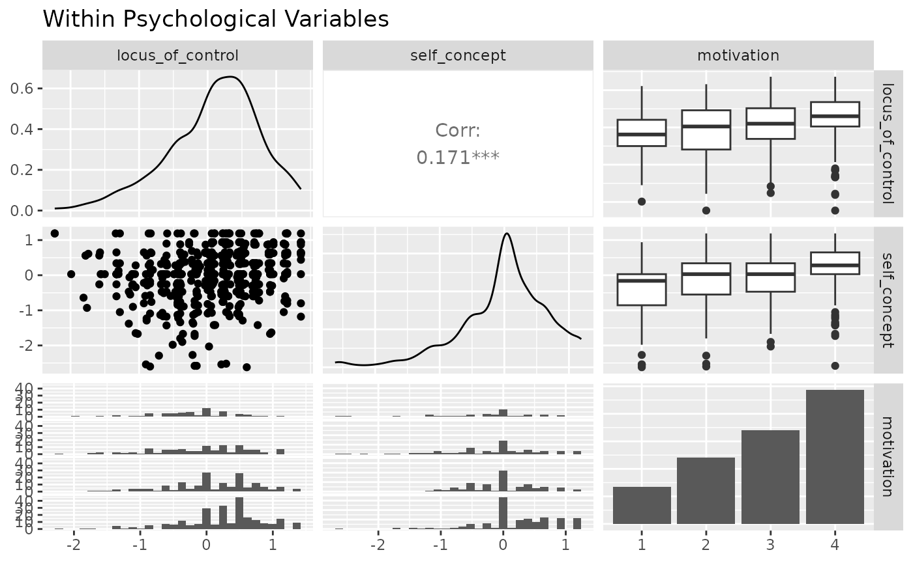
ggpairs(psychademic, academic_variables, title = "Within Academic Variables") #> `stat_bin()` using `bins = 30`. Pick better value with `binwidth`. #> `stat_bin()` using `bins = 30`. Pick better value with `binwidth`. #> `stat_bin()` using `bins = 30`. Pick better value with `binwidth`. #> `stat_bin()` using `bins = 30`. Pick better value with `binwidth`.
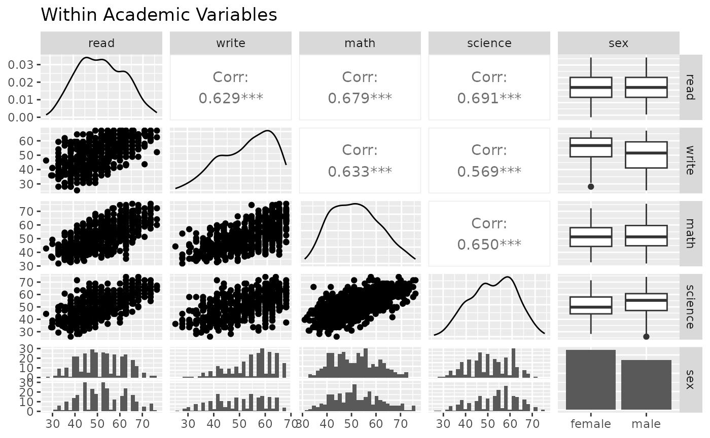
Next, look at the between correlation using ggduo().
ggduo( psychademic, psych_variables, academic_variables, types = list(continuous = "smooth_lm"), title = "Between Academic and Psychological Variable Correlation", xlab = "Psychological", ylab = "Academic" ) #> `stat_bin()` using `bins = 30`. Pick better value with `binwidth`. #> `stat_bin()` using `bins = 30`. Pick better value with `binwidth`.
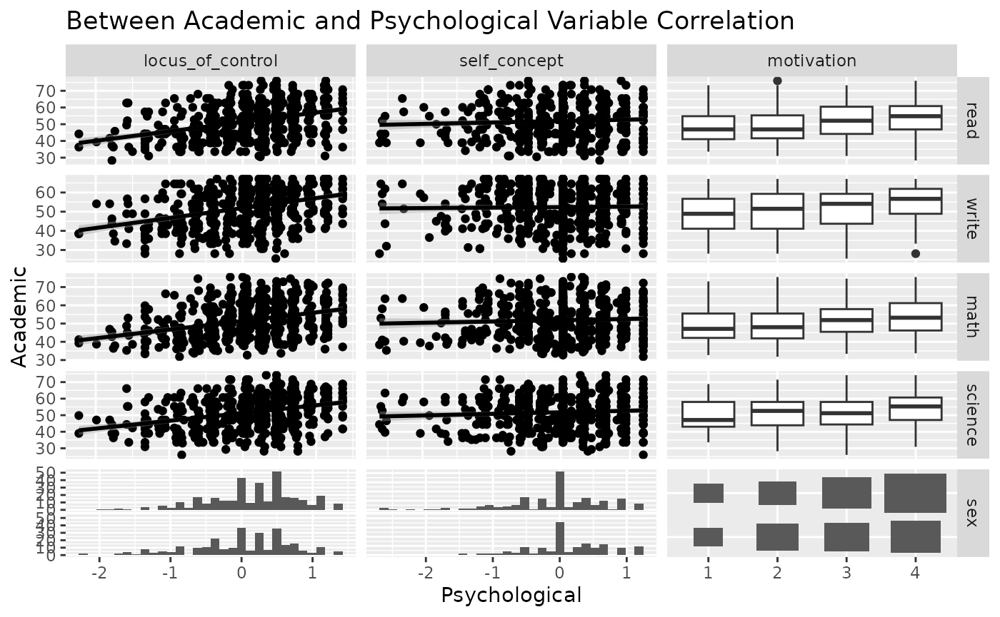
Since ggduo does not have a upper section to display the correlation values, we may use a custom function to add the information in the continuous plots. The strips may be removed as each group name may be recovered in the outer axis labels.
lm_with_cor <- function(data, mapping, ..., method = "pearson") { x <- eval_data_col(data, mapping$x) y <- eval_data_col(data, mapping$y) cor <- cor(x, y, method = method) ggally_smooth_lm(data, mapping, ...) + ggplot2::geom_label( data = data.frame( x = min(x, na.rm = TRUE), y = max(y, na.rm = TRUE), lab = round(cor, digits = 3) ), mapping = ggplot2::aes(x = x, y = y, label = lab), hjust = 0, vjust = 1, size = 5, fontface = "bold", inherit.aes = FALSE # do not inherit anything from the ... ) } ggduo( psychademic, rev(psych_variables), academic_variables, mapping = aes(color = sex), types = list(continuous = wrap(lm_with_cor, alpha = 0.25)), showStrips = FALSE, title = "Between Academic and Psychological Variable Correlation", xlab = "Psychological", ylab = "Academic", legend = c(5,2) ) + theme(legend.position = "bottom") #> `stat_bin()` using `bins = 30`. Pick better value with `binwidth`. #> `stat_bin()` using `bins = 30`. Pick better value with `binwidth`. #> `stat_bin()` using `bins = 30`. Pick better value with `binwidth`.
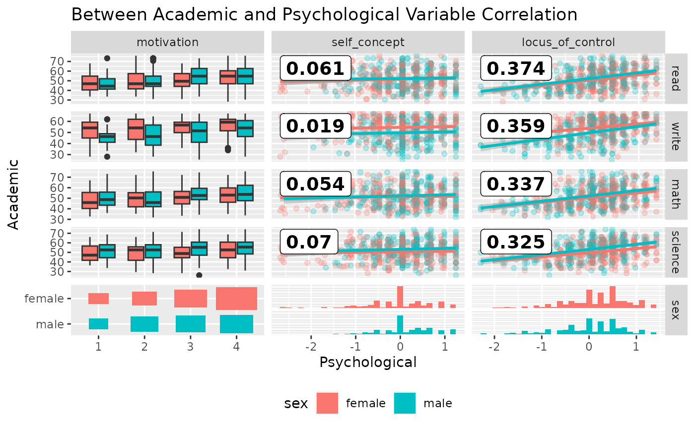
While displaying multiple time series vertically over time, such as + ggplot2::facet_grid(time ~ .), ggduo() can handle both continuous and discrete data. ggplot2 does not mix discrete and continuous data on the same axis.
library(ggplot2) data(pigs) pigs_dt <- pigs[-(2:3)] # remove year and quarter pigs_dt$profit_group <- as.numeric(pigs_dt$profit > mean(pigs_dt$profit)) qplot( time, value, data = reshape::melt.data.frame(pigs_dt, "time"), geom = c("smooth", "point") ) + facet_grid(variable ~ ., scales = "free_y") #> `geom_smooth()` using method = 'loess' and formula 'y ~ x'
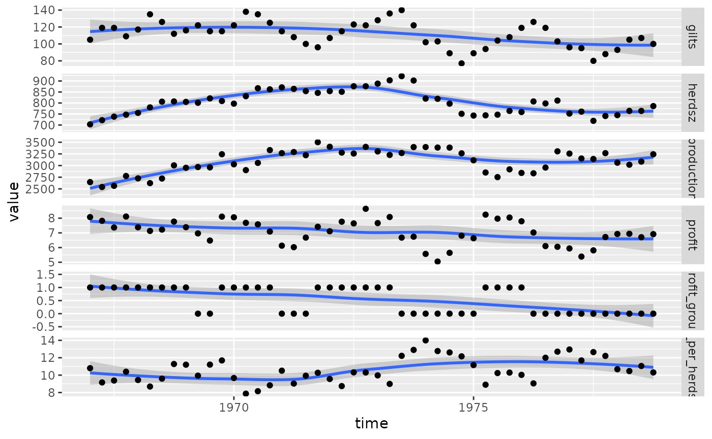
Instead, we may use ggts to display the data. ggts changes the default behavior of ggduo of columnLabelsX to equal NULL and allows for mixed variable types.
# make the profit group as a factor value profit_groups <- c( "1" = "high", "0" = "low" ) pigs_dt$profit_group <- factor( profit_groups[as.character(pigs_dt$profit_group)], levels = unname(profit_groups), ordered = TRUE ) ggts(pigs_dt, "time", 2:7) #> `stat_bin()` using `bins = 30`. Pick better value with `binwidth`.
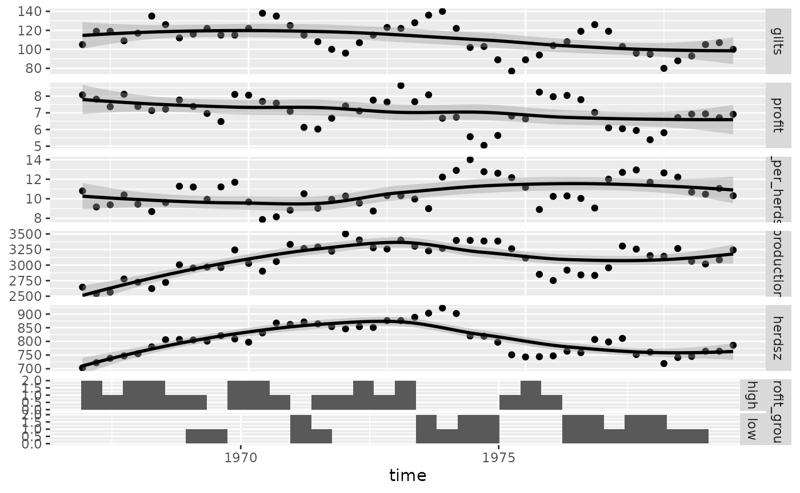
# remove the binwidth warning pigs_types <- list( comboHorizontal = wrap(ggally_facethist, binwidth = 1) ) ggts(pigs_dt, "time", 2:7, types = pigs_types)
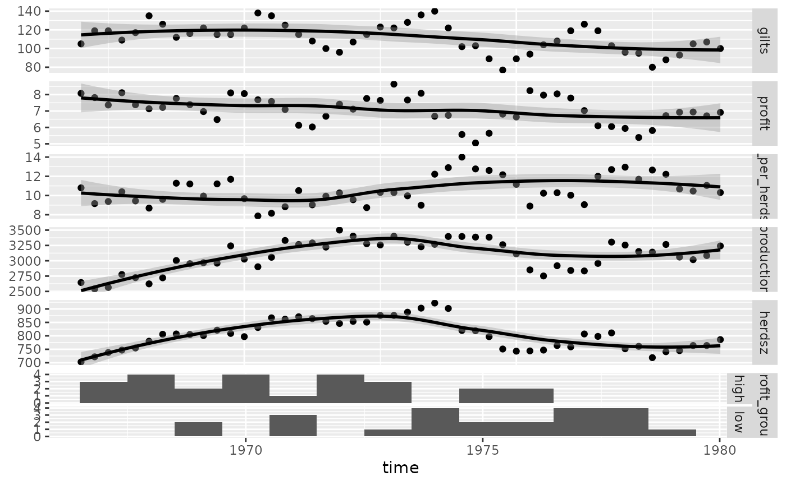
# add color and legend pigs_mapping <- aes(color = profit_group) ggts(pigs_dt, pigs_mapping, "time", 2:7, types = pigs_types, legend = c(6,1))
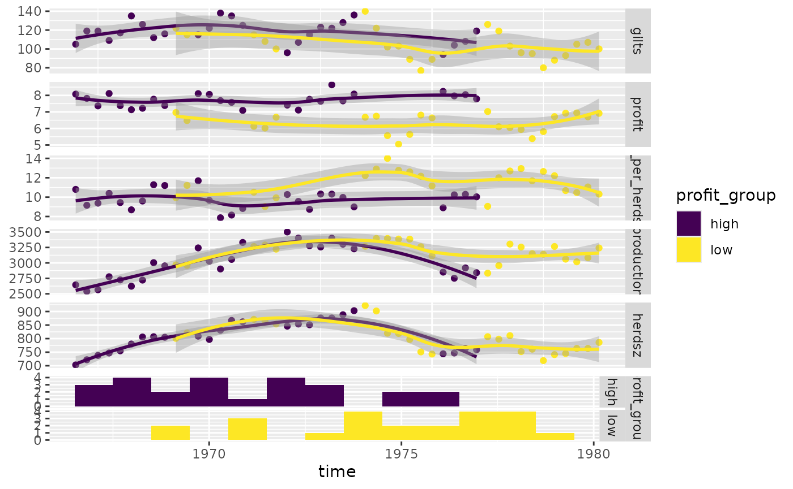
Produce more meaningful labels, add a legend, and remove profit group strips.
pm <- ggts( pigs_dt, pigs_mapping, 1, 2:7, types = pigs_types, legend = c(6,1), columnLabelsY = c( "number of\nfirst birth sows", "sell price over\nfeed cost", "sell count over\nheard size", "meat head count", "breading\nheard size", "profit\ngroup" ), showStrips = FALSE ) + labs(fill = "profit group") + theme( legend.position = "bottom", strip.background = element_rect( fill = "transparent", color = "grey80" ) ) pm
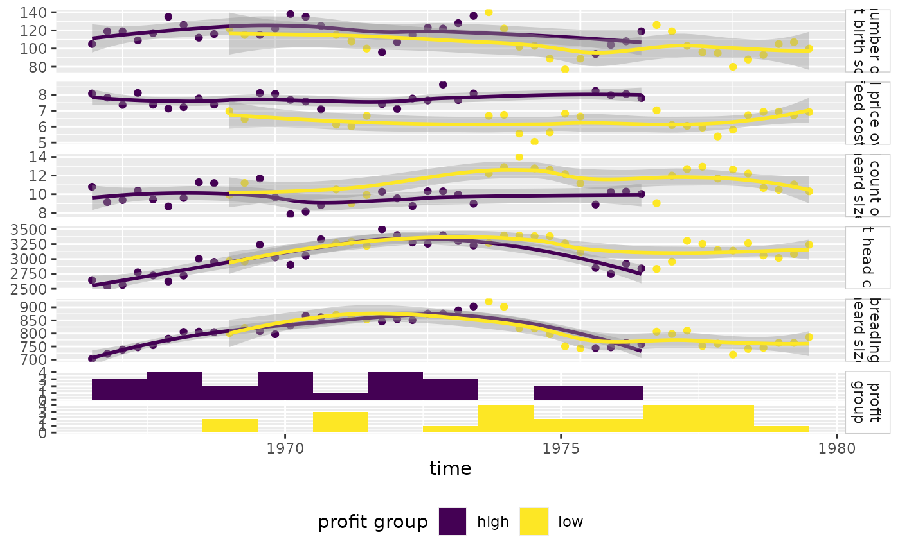
Since ggduo() may take custom functions just like ggpairs(), we will make a custom function that displays the residuals with a red line at 0 and all other y variables will receive a simple linear regression plot.
Note: the marginal residuals are calculated before plotting and the y_range is found to display all residuals on the same scale.
swiss <- datasets::swiss # add a 'fake' column swiss$Residual <- seq_len(nrow(swiss)) # calculate all residuals prior to display residuals <- lapply(swiss[2:6], function(x) { summary(lm(Fertility ~ x, data = swiss))$residuals }) # calculate a consistent y range for all residuals y_range <- range(unlist(residuals)) # custom function to display continuous data. If the y variable is "Residual", do custom work. lm_or_resid <- function(data, mapping, ..., line_color = "red", line_size = 1) { if (as.character(mapping$y) != "Residual") { return(ggally_smooth_lm(data, mapping, ...)) } # make residual data to display resid_data <- data.frame( x = data[[as.character(mapping$x)]], y = residuals[[as.character(mapping$x)]] ) ggplot(data = data, mapping = mapping) + geom_hline(yintercept = 0, color = line_color, size = line_size) + ylim(y_range) + geom_point(data = resid_data, mapping = aes(x = x, y = y), ...) } # plot the data ggduo( swiss, 2:6, c(1,7), types = list(continuous = lm_or_resid) ) #> Warning: Using `as.character()` on a quosure is deprecated as of rlang 0.3.0. #> Please use `as_label()` or `as_name()` instead. #> This warning is displayed once per session. #> Warning in if (as.character(mapping$y) != "Residual") {: the condition has #> length > 1 and only the first element will be used #> Warning in if (as.character(mapping$y) != "Residual") {: the condition has #> length > 1 and only the first element will be used #> Warning in if (as.character(mapping$y) != "Residual") {: the condition has #> length > 1 and only the first element will be used #> Warning in if (as.character(mapping$y) != "Residual") {: the condition has #> length > 1 and only the first element will be used #> Warning in if (as.character(mapping$y) != "Residual") {: the condition has #> length > 1 and only the first element will be used #> Warning in if (as.character(mapping$y) != "Residual") {: the condition has #> length > 1 and only the first element will be used #> Warning in if (as.character(mapping$y) != "Residual") {: the condition has #> length > 1 and only the first element will be used #> Warning in if (as.character(mapping$y) != "Residual") {: the condition has #> length > 1 and only the first element will be used #> Warning in if (as.character(mapping$y) != "Residual") {: the condition has #> length > 1 and only the first element will be used #> Warning in if (as.character(mapping$y) != "Residual") {: the condition has #> length > 1 and only the first element will be used
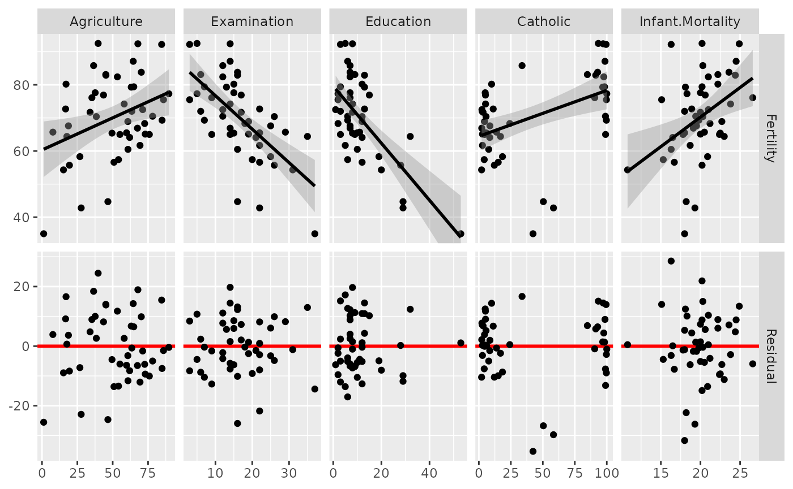
# change line to be thicker and blue and the points to be slightly transparent ggduo( swiss, 2:6, c(1,7), types = list( continuous = wrap(lm_or_resid, alpha = 0.7, line_color = "blue", line_size = 3 ) ) ) #> Warning in if (as.character(mapping$y) != "Residual") {: the condition has #> length > 1 and only the first element will be used #> Warning in if (as.character(mapping$y) != "Residual") {: the condition has #> length > 1 and only the first element will be used #> Warning in if (as.character(mapping$y) != "Residual") {: the condition has #> length > 1 and only the first element will be used #> Warning in if (as.character(mapping$y) != "Residual") {: the condition has #> length > 1 and only the first element will be used #> Warning in if (as.character(mapping$y) != "Residual") {: the condition has #> length > 1 and only the first element will be used #> Warning in if (as.character(mapping$y) != "Residual") {: the condition has #> length > 1 and only the first element will be used #> Warning in if (as.character(mapping$y) != "Residual") {: the condition has #> length > 1 and only the first element will be used #> Warning in if (as.character(mapping$y) != "Residual") {: the condition has #> length > 1 and only the first element will be used #> Warning in if (as.character(mapping$y) != "Residual") {: the condition has #> length > 1 and only the first element will be used #> Warning in if (as.character(mapping$y) != "Residual") {: the condition has #> length > 1 and only the first element will be used
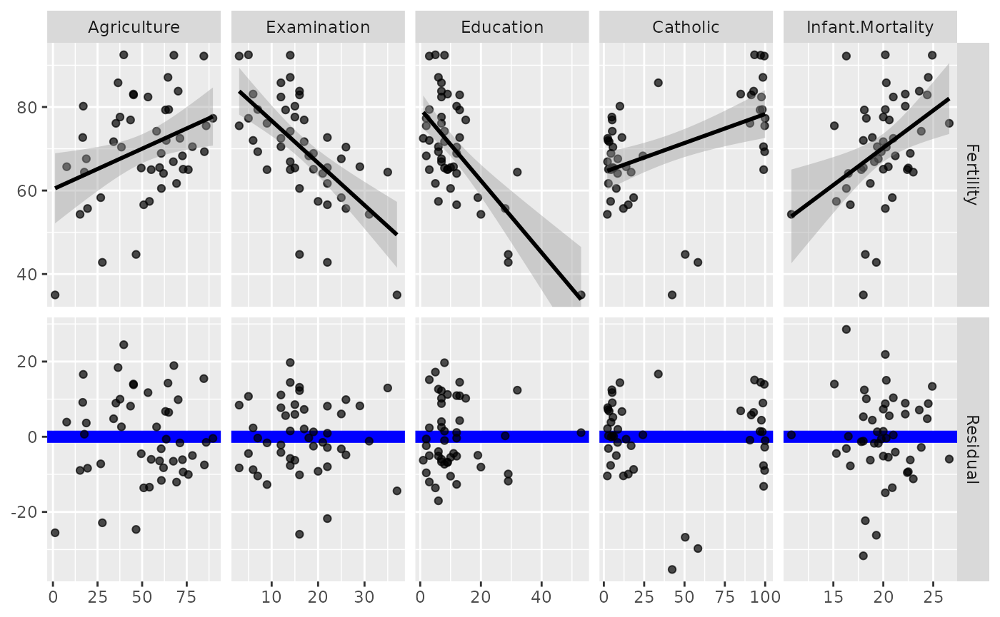
You can customize the type of plots to display with the types argument. types is a list that may contain the variables ‘continuous’, ‘combo’, ‘discrete’, and ‘na’. Each element of the list may be a function or a string. If a string is supplied, it must be a character string representing the tail end of a ggally_NAME function.
continuous: when both x and y variables are continuouscomboHorizontal: when x is continuous and y is discretecomboVorizontal: when x is discrete and y is continuousdiscrete: when both x and y variables are discretena: when all x data and all y data is NA
The list of current valid ggally_NAME functions is visible in vignette("ggally_plots").